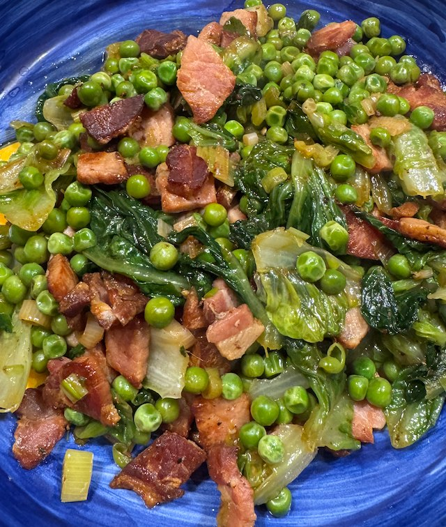

Peas, Lettuce and Bacon

Serves: 4
Cook Time: 30 min
Ingredients
- 250g bacon, chopped in strips
- olive oil
- 2 little gem lettuce, cut in wedges
- 4 spring onions, chopped
- 400g peas
- 150ml chicken stock
- 1 tbsp butter
- 1 tbsp mint, chopped
- salt and pepper
Method
Heat frying pan to medium. Add olive oil, bacon. Fry till crisp.
Add lettuce and spring onions and fry for 2 min.
Add peas, stock, butter. Bring to the bubble and cook till peas tender, about 5 min.
Add mint. Taste for salt.